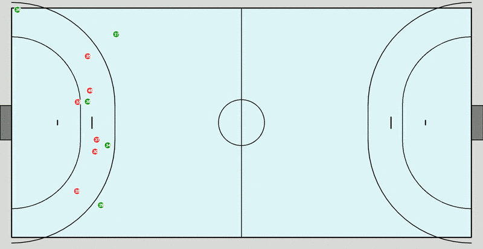
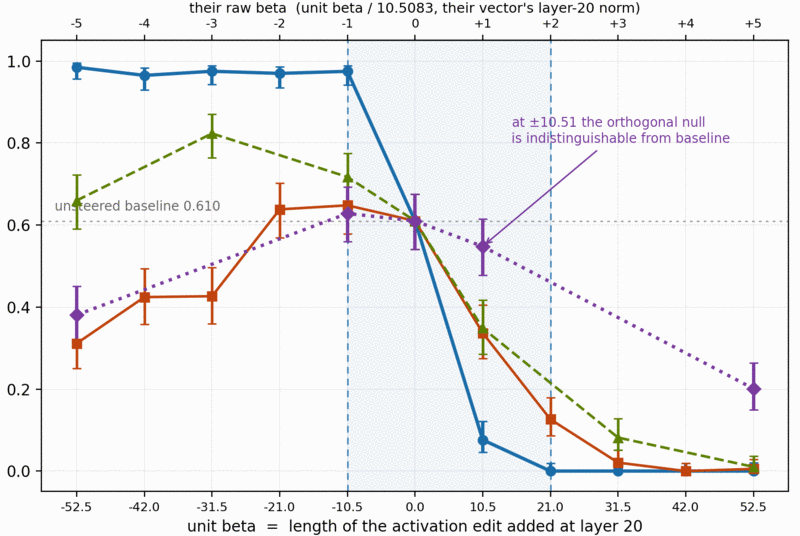
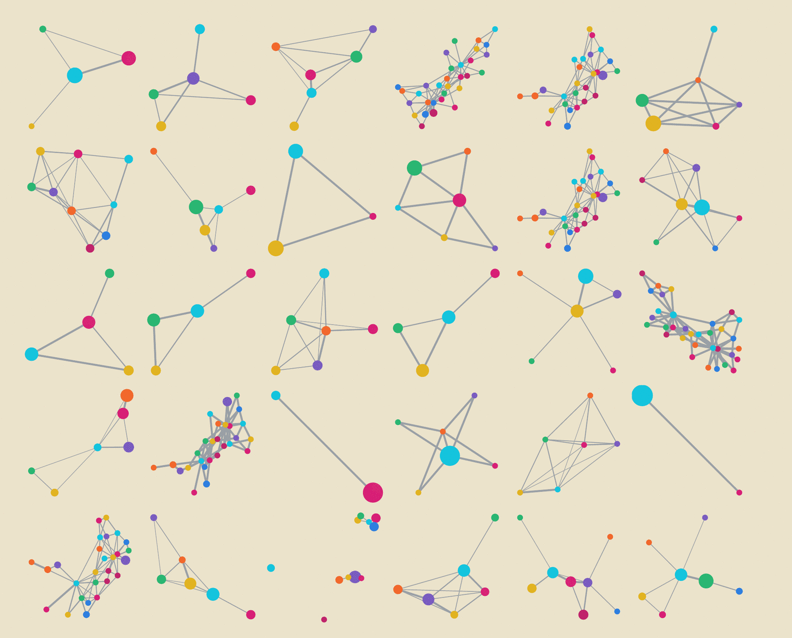
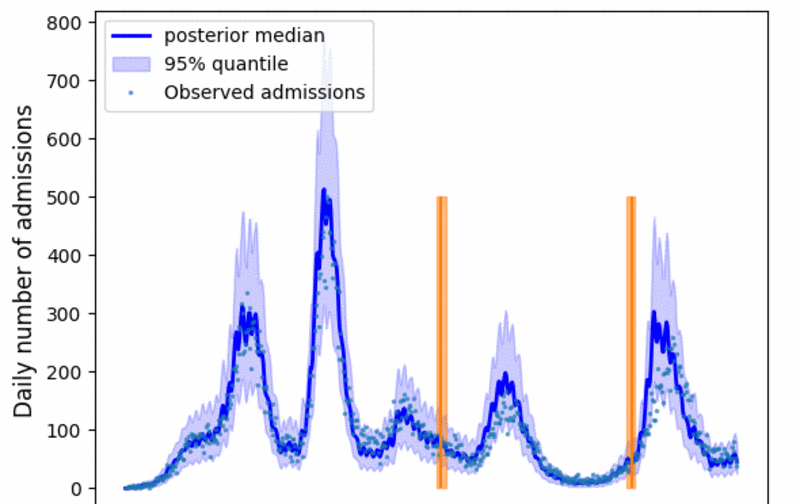

Player detection and tracking on handball broadcast footage, with per-frame homography projecting players onto a tactical map. Team assignment is unsupervised — SigLIP embeddings of player crops, reduced and clustered. Part of a wider sports-analytics line that also covers tennis, and graph neural networks predicting pass success from spatio-temporal data.

Reproduction and robustness audit of persona-vector steering in game-theoretic settings. The published baseline reproduces on all six games; a deterministic scorer replaces the paid LLM judge at 95.6% agreement, which makes the whole evaluation free to run.

A package implementing coarse-graining methods for networks, co-developed alongside a cross-disciplinary review comparing approaches from physics, computer science and network science on how well each preserves spectral, topological and dynamical properties.

Infers shifts in hospitalisation and death rates across Spanish regions through a delayed negative-binomial observation model.